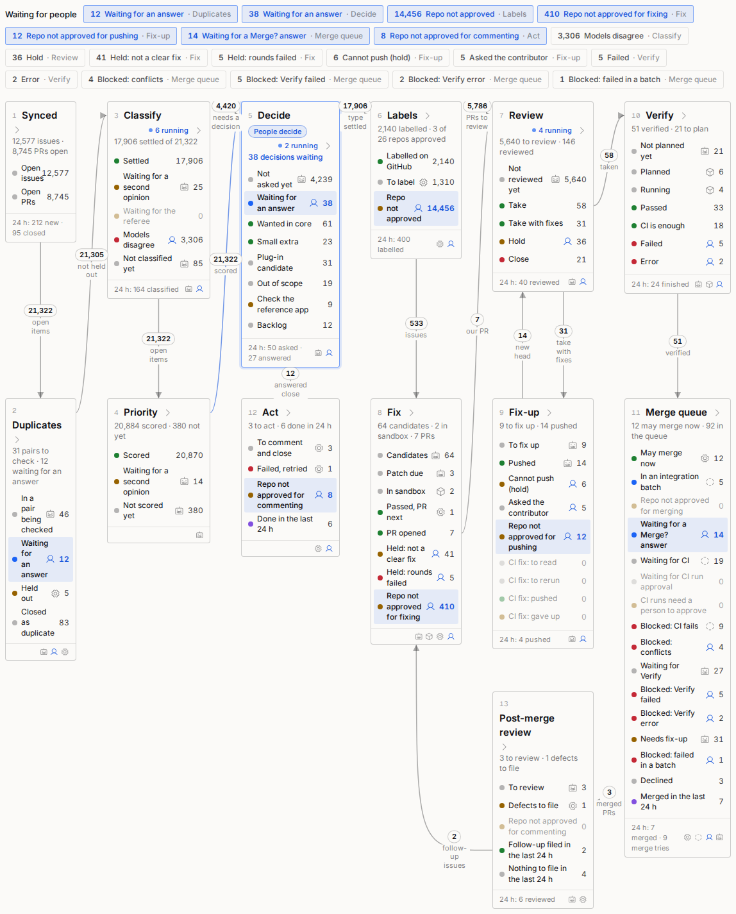

HELLO, HUMAN! CASE STUDY 10
ArtCraft,
에이전트와 함께 만드는 창작 도구
PhotoCraft의 편집 엔진과 AutoCraft의 개발 운영에서 찾은
Workless Engineering의 조건

상품 이미지의 크기를 바꾸고, 배너 문구를 수정하고, 채널별 파일을 내보내는 일을 떠올려 보겠습니다. 사람이 한 번 판단한 뒤에도 비슷한 조작을 반복해야 합니다. 이런 작업을 줄이려면 AI가 쓸 수 있는 편집 기능과, 작업 결과를 확인할 방법이 필요합니다.
ArtCraft는 이미지·영상·문서 등 여러 분야의 오픈소스 앱을 만드는 프로젝트입니다. 대표 제품 PhotoCraft는 Photoshop 사용자에게 익숙한 작업 방식을 제공하는 이미지 편집기를 지향합니다. 공개 저장소에서는 화면으로 사용하는 앱에 더해, 에이전트가 편집 기능을 호출하는 인터페이스와 개발 작업을 관리하는 도구까지 확인할 수 있습니다.
이 사례에서는 사람과 에이전트가 함께 쓰는 기능, 결과를 판정하는 검증 기준, 자동화의 범위를 정하는 운영 규칙을 살펴봅니다.
제품 소개 · ArtCraft ↗ · PhotoCraft ↗
ArtCraft가 만드는 것
공식 사이트는 확인일 기준 Crafting Apps 17종을 소개합니다. PhotoCraft, VectorCraft, FilmCraft, PdfCraft, WordCraft 등이 포함됩니다. 설치 파일을 제공하며, 제품 상태는 초기 알파(early alpha) 또는 개발 중(in development)으로 표시합니다.
이름이 비슷한 구성 요소는 구분해서 볼 필요가 있습니다.
| 구성 요소 | 하는 일 |
|---|---|
| Crafting Apps | 이미지·벡터·영상·PDF·문서 등을 편집하는 앱 제품군 |
| ArtCraft Launcher | 운영체제와 CPU에 맞는 앱을 설치하고 업데이트하는 실행기 |
| ArtCraft Studio | 장면을 구성한 뒤 이미지·영상 생성 모델로 결과를 만드는 별도 앱 |
| AutoCraft | GitHub 이슈와 PR의 분류·검토·수정·검증·병합을 관리하는 개발 도구 |
Launcher의 README에 따르면 앱별 GitHub 릴리스를 확인하고, 배포 파일의 체크섬을 대조해 설치합니다.
17종 안에 포함된 Craft Anything도 AutoCraft와 다릅니다. Craft Anything은 기존 소프트웨어를 관찰하고 새 구현을 만드는 절차를 사용자에게 제공하는 알파 단계의 앱입니다.
출처 · 제품군과 제공 상태 ↗ · Launcher ↗ · Studio ↗ · Craft Anything ↗ · AutoCraft ↗
익숙한 화면으로
전환 비용을 낮추는 선택
PhotoCraft는 Rust로 구현한 네이티브 이미지 편집기로, 데스크톱과 브라우저용 빌드를 제공합니다. 위의 공개 화면에는 메뉴, 도구 모음, 레이어 패널, 곡선 조정 등이 배치되어 있습니다. 공식 설명도 기존 사용자가 익힌 메뉴 위치와 단축키를 유지하는 방향을 강조합니다.
기능의 위치와 조작법을 다시 익히는 부담을 줄이려는 선택으로 볼 수 있습니다. 다만 실제 작업을 옮기려면 레이어를 저장한 뒤 다른 프로그램에서 다시 열 수 있는지, 글자와 색이 유지되는지, 큰 파일도 다룰 수 있는지 확인해야 합니다.
PhotoCraft의 기여 규칙은 공개 명세와 관찰 가능한 동작을 바탕으로 구현하고, 다른 제품의 코드·자산을 복사하지 않도록 요구합니다.
출처 · 공식 제품 설명 ↗ · 구현·기여 규칙 ↗
사람과 에이전트가
같은 편집 엔진을 사용한다
PhotoCraft는 편집 기능을 화면과 분리하고, 문서 모델과 명령 엔진에 GUI·CLI·JSON 제어 채널·MCP를 연결합니다. 자동화 코드에서도 명령 ID와 매개변수를 편집 세션의 실행 함수로 전달하는 경로를 확인할 수 있습니다.
GUI의 메뉴·도구·패널을 사용합니다.
CLI·JSON 제어·MCP로 작업을 요청합니다.
명령 ID와 매개변수로 작업을 실행하고, 문서 상태와 결과를 확인합니다.
사람은 기준과 결과를 판단하고, 반복 실행은 명령 인터페이스에 맡깁니다.
GUI는 사람이 화면을 보며 편집하는 입구입니다. CLI는 화면 없이 정해진 작업을 실행하고, JSON 제어 채널은 실행 중인 앱의 상태를 확인하고 조작합니다. MCP는 AI 에이전트가 편집 기능과 상태 조회 도구를 사용할 수 있도록 연결합니다.
커머스 업무라면 사람이 이미지 한 장을 보정한 뒤, 같은 편집 규칙을 여러 상품 이미지에 적용하는 흐름을 생각할 수 있습니다. 편집 기능을 명령으로 호출할 수 있으면 사람이 정한 작업을 에이전트가 반복하는 데 활용할 수 있습니다.
제어 프로토콜은 로컬 연결과 인증 토큰을 사용하며, 읽고 쓸 수 있는 폴더 범위를 정합니다. 에이전트가 자동화 인터페이스로 자신의 접근 폴더를 넓히지 못하도록 제한하는 규칙도 명시합니다.
출처 · 아키텍처 ↗ · 자동화의 공통 명령 실행 ↗ · MCP와 배치 실행 ↗ · 제어 프로토콜 ↗
설계 원칙을
자동 검사로 바꾼다
AI와 여러 기여자가 함께 수정하는 코드에서는 설계 원칙이 계속 지켜지는지도 확인해야 합니다. PhotoCraft는 이를 검사 도구로 구현합니다.
엔진에 화면 코드가 섞이지 않는가
계층 검사기가 패키지 의존성을 읽어 역방향 의존성과 하위 계층의 UI 의존성을 찾아냅니다. 이 검사는 CI에 포함됩니다.
최적화해도 기준 이미지가 유지되는가
CPU 렌더러를 기준으로 삼아 GPU 결과가 정해진 허용 오차 안에 있는지 비교하는 시험을 둡니다.
극단적인 입력에도 오류를 처리하는가
비정상 종료를 찾는 panic_hunt를 CI 검사 명령의 별도 단계로 실행하도록 구성합니다.
여기서 가져올 수 있는 원칙은 AI가 지켜야 할 중요한 조건을 실행 가능한 검사로 바꾸는 것입니다. 주문 금액의 합계, 재고 수량의 허용 범위, 정산 항목의 일치도 이런 검사로 만들 수 있습니다. 코드를 고친 뒤에도 기존 업무 조건이 지켜지는지 확인하는 기준이 됩니다.
출처 · 계층 검사 구현 ↗ · CPU·GPU 비교 시험 ↗ · CI 구성 ↗ · 검사 실행 단계 ↗
PSD 호환성을
세 가지 질문으로 나눈다
Photoshop의 문서 형식인 PSD를 다룰 때, 파일을 보존하는 것과 편집 결과를 재현하는 것은 다른 문제입니다. PhotoCraft의 검사는 다음 세 가지를 구분해 읽어야 합니다.
바이트를 그대로 보존하는가
파일 형식을 다루는 craft-psd 라이브러리가 읽고 다시 쓸 때 원본 바이트를 유지하는지 검사합니다.
PhotoCraft 앱에서 저장할 때는 이미지·레이어 정보를 다시 쓰므로 원본과 바이트 단위로 같지 않습니다.
저장 전후 모습이 같은가
PhotoCraft에서 읽은 문서를 저장하고 다시 읽어도 모습이 유지되는지 비교합니다.
Photoshop에서도 같은 모습으로 열리고 편집되는지는 별도 확인이 필요합니다.
Photoshop의 결과와 같은가
PhotoCraft의 렌더링을 Photoshop이 만든 기준 이미지와 비교합니다.
이미지가 일치해도 모든 글자·효과·스마트 오브젝트의 편집 동작까지 같다는 뜻은 아닙니다.
예를 들어 첫 번째 불러오기에서 어떤 효과를 잘못 해석했다면, 잘못된 모습을 그대로 저장하고 다시 불러와도 두 번째 검사는 통과할 수 있습니다. 저장 전후의 일관성과 원본 프로그램과의 일치는 별도의 질문입니다.
비교에 쓰는 이미지가 어떻게 만들어졌는지도 중요합니다. 파일 입출력 시험에서는 스마트 오브젝트와 글자에 Photoshop이 저장한 캐시 픽셀을 사용합니다. 별도의 엔진 시험에서는 이를 자체 엔진으로 다시 그린 뒤 Photoshop의 결과와 비교합니다. 글자 비교에는 시험용 폰트의 설치 여부도 영향을 줍니다.
평가 수치는 기준일과 함께 읽습니다
자체 평가 문서는 기능의 존재 여부와 실무 대체 준비도를 구분합니다. 대표 수치는 2026년 10월 10일의 평가이며, 이후 세부 내용이 갱신됐어도 전체를 새로 측정한 값은 아닙니다.
자동 생성되는 scorecard는 소스에 적힌 최소 통과 기준, 저장된 성능 기준값, 체크리스트 등을 모은 문서입니다. 성능 표에는 높은 시스템 부하의 영향을 받은 10월 5일 기준값과 미실행 항목이 함께 있습니다. 현재 제품의 성능을 판단하려면 측정 조건과 실행 여부를 먼저 확인해야 합니다.
호환성 수치를 읽을 때도 무엇과 무엇을 비교했고, 어디까지 확인했는지가 먼저입니다.
출처 · PSD 보존 범위 ↗ · 파일 입출력·기준 이미지 검사 ↗ · 엔진의 재렌더링 시험 ↗ · 자체 평가의 기준일 ↗ · 자동 평가표와 측정 조건 ↗
AutoCraft는 개발 작업을
어떻게 운영하나
ArtCraft는 앱을 유지보수하는 과정도 도구로 만들고 있습니다. 공개된 AutoCraft는 GitHub 이슈와 PR을 수집하고, 분류·중복 탐색·우선순위 판단·코드 검토·수정·검증·병합을 연결합니다. 문서는 Jev와 Haiku, Sonnet, Opus를 역할에 따라 배치한 구성을 설명합니다. 범위 판단이나 예외 처리처럼 사람이 결정할 항목은 운영자에게 전달합니다.

- 01대상을 모으고 분류이슈·PR을 읽고 중복과 우선순위를 정리합니다.
- 02검토하고 수정작업 범위를 판단하고 패치와 수정 제안을 만듭니다.
- 03검증하고 실행 조건 확인CI, 검토한 커밋, 권한과 병합 조건을 대조합니다.
- 04병합 후 다시 검토반영된 결과를 읽고 필요한 후속 작업을 찾습니다.
범위가 불명확하거나 규칙 밖의 판단이 필요하면 운영자에게 묻습니다. 사람은 병합을 보류하거나 진행 중인 배치를 중단할 수 있습니다.
쓰기 권한을 작업 종류와 저장소별로 나눕니다
라벨 기록, 댓글 작성, 수정 PR 생성, 코드 푸시, 병합에 필요한 승인을 구분합니다. 승인된 범위에서 규칙이 허용하는 작업은 자동 진행하며, 예외 판단은 사람에게 넘깁니다. 전체 파이프라인을 끄거나 저장소별로 제한하는 장치도 있습니다.
실행 직전에 현재 상태를 다시 읽습니다
병합이나 푸시 전에 PR을 다시 읽고, 검토한 커밋이 바뀌었거나 PR이 닫혔다면 기존 판단으로 진행하지 않도록 구현되어 있습니다. 검토 대상과 실제 변경 대상을 일치시키는 장치입니다.
병합 조건을 코드로 검사합니다
검토한 커밋, CI 상태, 병합 가능 여부, 유지관리자의 변경 요청 등을 확인합니다. 진행 중이거나 실패한 특정 검사에는 이름을 지정해 예외를 둘 수 있습니다. 다만 필수 검사 실패로 GitHub가 병합을 막은 경우에는 실패를 허용하는 예외가 적용되지 않습니다.
변경 기록과 개입 수단을 남깁니다
GitHub 쓰기를 담당하는 모듈이 실패한 시도까지 감사 기록에 남깁니다. 운영자는 PR의 병합을 보류하거나 진행 중인 통합 배치를 멈출 수 있습니다. 배치를 중단하면 구성 PR을 보류해 다음 실행이 같은 배치를 바로 다시 만들지 않도록 합니다.
AutoCraft는 무엇을 고칠지 고르는 일부터 검증, 실행 권한, 중단 방법까지 코드와 절차로 다룹니다. 실제 운영의 오류율이나 사람 개입률은 공개 구현만으로 확인할 수 없습니다.
출처 · 파이프라인 ↗ · 실행 전 재확인 ↗ · 병합 조건 ↗ · 쓰기와 감사 기록 ↗ · 보류·중단 제어 ↗
커머스 팀에서 시작할
작은 실험
아래는 ArtCraft의 설계를 참고한 아직 실행하지 않은 적용안입니다. 상품 이미지의 규격 변환처럼 결과를 눈으로 비교하기 쉬운 업무를 골라 입력, 결과물, 완료 조건부터 정해 봅니다.
사용 권한이 있는 샘플 이미지 20장을 준비합니다. 정사각형·가로형·세로형, 투명 배경, 작은 글자가 포함된 파일을 섞고 세 가지 채널 규격으로 내보내는 상황을 가정합니다.
기대 출력은 최대 60개 파일과 처리 기록입니다. 원본은 별도 폴더에 보존하고, 비율을 유지한 채 여백을 넣는 규칙부터 시험합니다. 열리지 않는 파일은 보류하고, 어떤 원본에서 어느 단계가 실패했는지 남깁니다.
| 단계 | 해볼 일 | 확인할 기준 |
|---|---|---|
| 기준 만들기 | 대표 이미지와 예외 사례의 원하는 결과를 정합니다. | 크기, 색, 투명도, 글자 잘림, 파일명 |
| 명령으로 실행 | 수동 작업 한 가지를 CLI나 공통 명령으로 호출합니다. | 같은 입력·설정의 결과를 재현할 수 있는가 |
| 에이전트 연결 | 입력과 매개변수 선택을 맡기고 실행 결과를 기록합니다. | 실패한 단계와 재실행 대상을 찾을 수 있는가 |
| 업무 효과 측정 | 같은 샘플의 수동 처리와 비교합니다. | 검수 통과 수, 누락된 오류, 재작업·검수 시간 |
처음에는 에이전트가 고른 설정을 사람이 확인한 뒤 실행합니다. 정상 파일 외에도 손상된 파일, 이미 결과 파일이 있는 경우, 중간 내보내기 실패를 넣어 봅니다. 기대하는 동작은 실패를 기록하고, 앞서 성공한 결과를 확인해 필요한 작업만 다시 하는 것입니다.
완료 수는 파일이 생성된 개수와 구분합니다. 사람이 크기·색·투명도·글자 잘림을 확인한 뒤 통과시킨 결과를 세고, 보류 사유와 수정 시간을 함께 남깁니다. 이 비교를 마쳐야 자동화가 실제 수고를 줄였는지 판단할 수 있습니다.
먼저 정할 것은 에이전트에게 작업을 맡길 조건입니다.
함께 쓸 편집 기능을 마련하고, 결과를 판정할 기준과 사람의 개입 범위를 정합니다. 실패했을 때 어디서 다시 시작할지도 확인해야 합니다. ArtCraft는 반복 작업을 줄이기 위해 제품 기능과 개발 운영을 함께 설계한 사례로 살펴볼 만합니다.
직접 살펴볼 자료
- ArtCraft · 제품군과 제공 상태 ↗
- PhotoCraft · 확인한 커밋의 소개와 공개 화면 ↗
- PhotoCraft · 구조와 설계 원칙 ↗
- PhotoCraft · 저장 전후와 기준 이미지 비교 ↗
- AutoCraft · 파이프라인과 운영 경계 ↗
저장소의 개발 버전에는 배포 버전보다 앞선 변경이 포함될 수 있습니다.
이미지 두 장은 제작자가 공개한 원본입니다. 구조·검사·개발 흐름 도식과 커머스 적용 예시는 헬로우 휴먼이 구성했습니다.
AI 사례연구 목록으로 돌아가기